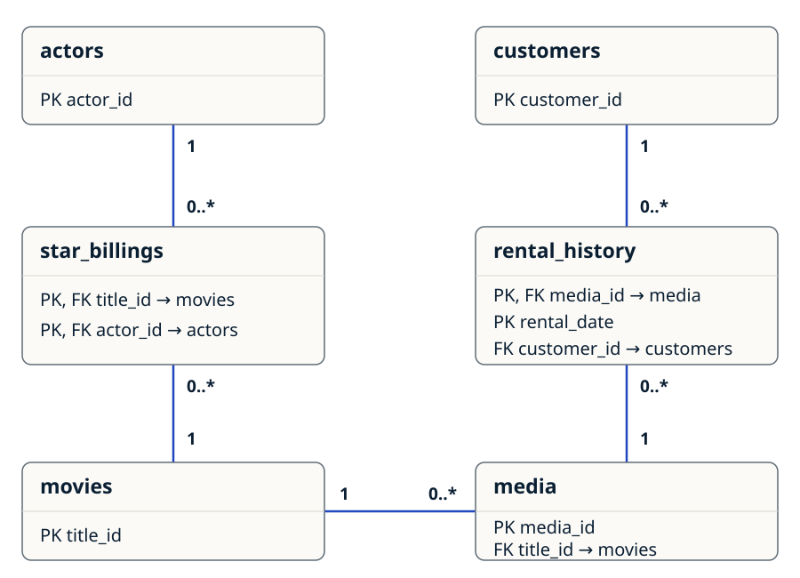

Database design
One movie, several copies
The store might own two copies of a film and have only one out on loan. I gave each copy its own ID and format. The rental record ties that ID to a customer, a checkout date and a return date.
A separate table links actors to titles. Primary keys identify individual records. Foreign keys ensure that a rental refers to a copy and a customer that exist.
Six tables and five relationships

Keys and relationships in text
actors- PK:
actor_id. One actor can have zero or morestar_billings. customers- PK:
customer_id. One customer can have zero or morerental_historyrecords. star_billings- Composite PK:
(title_id, actor_id). Both are required FKs, linking each row to exactly one movie and one actor. rental_history- Composite PK:
(media_id, rental_date). Required FKs:media_idandcustomer_id, linking each rental to exactly one copy and one customer. movies- PK:
title_id. One movie can have zero or moremediacopies and zero or morestar_billings. media- PK:
media_id. Required FK:title_id, linking each copy to exactly one movie. A copy can have zero or morerental_historyrecords.
All five foreign keys are NOT NULL. For example, every rental needs a customer, but a new customer can have no rentals yet. A copy can have many past rentals. I added the one open rental per copy rule later.
What each table holds
| Table | Purpose | Rows |
|---|---|---|
| Customers | Fictional customer records | 6 |
| Movies | Titles, categories, ratings, and release dates | 6 |
| Media | Individual copies and their formats | 8 |
| Actors | Actor records | 4 |
| Star billings | Sample links between actors and titles | 4 |
| Rental history | Checkouts and returns for each copy | 4 |
The script also creates four sequences for new identifiers, a customer last-name index, and the synonym tu as a shorter name for the view. I checked that Oracle created a valid index. I didn’t benchmark query speed.
Query and result
Which copies have not been returned?
The title_unavail view joins movies, copies and rentals. It returns a row when the return date is blank. If copy 94 is out and another copy of the same film is on the shelf, only copy 94 appears.
CREATE OR REPLACE VIEW title_unavail AS
SELECT m.title, me.media_id
FROM movies m
JOIN media me ON me.title_id = m.title_id
JOIN rental_history rh ON rh.media_id = me.media_id
WHERE rh.return_date IS NULL
WITH READ ONLY;| Title | Copy ID |
|---|---|
| The Shawshank Redemption | 94 |
I recorded a return for copy 94 and reran the query. The row disappeared whether I queried the view or its synonym. When I rolled back the test, the row returned.
Testing the class project
What the original database allowed
I ran the downloadable script in a fresh Oracle schema using SQL*Plus. All 43 checks passed. They covered the database objects, sample row counts, key and category constraints, sequences, query results and attempts to write through the read-only view.
I added those tests after the course ended. They also confirmed three choices in the original schema.
- Return dates. The original schema accepted a return before checkout.
- Double checkout. Two open rentals for the same copy were possible if their checkout dates differed. The copy then appeared twice in the view.
- Optional movie ratings. A rating could be blank. When someone entered a rating, Oracle checked it against the allowed values.
Separate portfolio extension · September 2026
Block returns dated before checkout and double checkouts
After the course, I used AI assistance to add two rules in a separate SQL script. A check constraint enforces return-date order, and a conditional unique index limits each copy to one open rental.
The return date can stay blank while a copy is out. Once entered, it must be on or after checkout. The index uses the copy ID for open rentals and NULL for completed ones, so the same copy can be rented again after a return. This follows Oracle's conditional uniqueness support.
ALTER TABLE rental_history ADD CONSTRAINT rental_return_order_ck
CHECK (return_date IS NULL OR return_date >= rental_date);
CREATE UNIQUE INDEX rental_one_open_uq ON rental_history
(CASE WHEN return_date IS NULL THEN media_id ELSE NULL END);Rental tests. I checked that two copies could be out at once and that a returned copy could go out again. The tests also covered same-time returns, multiple completed rentals and the view and synonym results. Oracle rejected returns dated before checkout on insert and update, a checkout moved past its return, and attempts to open, reopen or move a rental onto a copy already out.
Results. All 20 extension checks passed in a fresh Oracle schema using SQL*Plus on Oracle AI Database 26ai Free, version 23.26.3.0.0. Oracle reported zero invalid objects.
Limits. I tested one database session at a time and didn’t measure performance. The extension checks open rentals. It still allows overlapping dates on two completed rentals.
Run the extension once in a disposable Oracle schema after loading the original project. Fix any existing violations first. Oracle commits DDL implicitly. The tests roll back their sample rows, but the constraint and index stay installed.
-- Fresh disposable schema; run the original project first.
ALTER SESSION SET NLS_DATE_LANGUAGE = 'ENGLISH';
@Movie_Rental_Database.sql
@Movie_Rental_Improvements.sql
@Movie_Rental_Improvements_Validation.sqlRun the academic project
Use a fresh Oracle schema with permission to create tables, views, sequences, indexes, and synonyms. The script creates objects and commits sample rows, so use a disposable learning database. Run it as a script in SQL*Plus or SQL Developer because it includes SQL*Plus commands such as DESC.
Set the session date language to English because the original date literals use English month abbreviations. Run the project first, then the optional validation script in the same schema. The validation script rolls back its row changes, but sequence numbers advance.
ALTER SESSION SET NLS_DATE_LANGUAGE = 'ENGLISH';
@Movie_Rental_Database.sql
@Movie_Rental_Validation.sqlValidated project SHA-256: 9ebab5eb414cb45a8375e4ddb5d00e893c2fd470a58e0c390c9cd607e8a44101
Contact
Contact Jonathan.
I’m looking for permanent, full-time work. I’m based in New Jersey and open to remote roles in the U.S., hybrid work, and relocation.